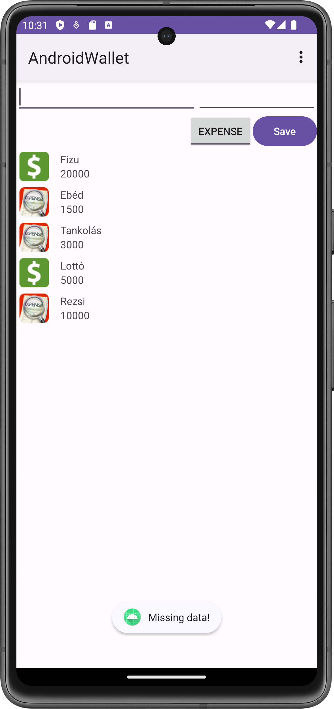

Labor 03 - Felhasználói felület tervezése és készítése Android platformon¶
Felkészülés a laborra¶
A labor célja egy egyszerű felhasználói felület tervezése, kivitelezése. A labor elején a laborvezető röviden bemutatja az alkalmazás részeit majd ezután önállóan a jelen dokumentáció segítségével kell elkészíteni az alkalmazást.
Felhasznált technológiák:¶
- Activity
- LinearLayout, TextView, ImageView, EditText, Button, ToggleButton
- LayoutInflater
Feltöltés¶
Az elkészült megoldást egy ZIP formájában (teljes Android Studio projekt – build
mappa kivehető) kell feltölteni a tárgy oldalán, ahol a laborvezető tudja értékelni.
Ehhez használhatjuk az Android Studio File -> Export to ZIP file... funkcióját.
(Az elkészült zip file ~10MB vagy annál kevesebb lesz.)
Értékelés¶
- Beviteli rész: 1 pont
- Listaelemek layoutja: 1 pont
- Listaelemek inflate-elése: 1 pont
- Toast üzenetek helyett SnackBar (önálló): 1 pont
- Összegző mező megjelenítése (önálló): 0,5 pont
- Összegző mező helyes működése (önálló): 0,5 pont
Az elkészítendő megoldás¶
A feladat egy kiadás / bevétel naplózására alkalmas alkalmazás elkészítése AndroidWallet néven. Az alkalmazás alap funkcionalitása, hogy a felhasználó fel tudja venni egy listába a kiadásait, bevételeit, vagy törölni tudja az egész lista tartalmát.
A képernyő mintaképe:

Az alkalmazás felépítése és működése a következő:
- Kezdőképernyő a listával illetve egy beviteli résszel, amelyen a felhasználó beír egy megnevezést és egy összeget, megadja a pénzforgalom irányát, és el tudja menteni a listába a tranzakcióját. Amennyiben itt bármelyik mező üres, a mentést meg kell akadályoznunk.
- Egy listaelem felépítése:
- Ikon a pénzforgalom irányától függően.
- A megadott megnevezés és alatta az összeg.
- A Toolbaron egy menüpont a lista teljes törlésére.
- A lista görgethető kell legyen (a későbbi laborokban a profi lista kezelésre majd a RecyclerView komponenst fogjuk használni).
Laborfeladatok¶
A labor során az alábbi feladatokat kell megvalósítani a laborvezető segítségével, illetve a jelölt feladatoknál önállóan.
Kezdő projekt létrehozása¶
Hozzon létre egy AndroidWallet nevű projektet Android Studioban: - File->New->New Project - válasszuk az Empty Activity-t; - Application name: AndroidWallet; - package name: hu.bme.aut.androidwallet ; - Minumum API level: 21; - Finish, és várjuk meg amíg a Studio mindent legenerál, ez első alkalomkor valamivel hosszabb időt vesz igénybe.

Az első futtatás¶
A Studio a generálást követően a activity_main.xml fájlt hozza be, ebből töröljük a TextView komponenst.
Az előkészületeink után egy első futtatást ki is próbálhatunk, akinél van kábel akár saját készüléken, vagy az előre telepített emulátoron (érdemes a laborgépek korlátozott erőforrásai miatt saját készüléket használni).

Menü elkészítése¶
res/values/strings.xml: egy új stringet veszünk fel a már ott megtalálhatókhoz hasonlóan action_delete_all néven és Delete All tartalommal.

- A
reskönyvtáron jobb gombos menüből hozzunk létre újAndroid Resource Fileelemet.

- Ennek a tartalma legyen az alábbi:
<?xml version="1.0" encoding="utf-8"?>
<menu xmlns:android="http://schemas.android.com/apk/res/android">
<item android:id="@+id/delete_all"
android:title="@string/action_delete_all" />
</menu>
- Most még a
MainActivity-ből fel kell fújjuk a menüt, és le kell majd kezeljük a kattintásokat, ehhez vegyük fel az alábbi kódot:
override fun onCreateOptionsMenu(menu: Menu?): Boolean {
menuInflater.inflate(R.menu.menu_main, menu)
return true
}
override fun onOptionsItemSelected(item: MenuItem): Boolean {
return when (item.itemId) {
R.id.delete_all -> {
// TODO: itt fogjuk kezelni a kattintást
true
}
else -> super.onOptionsItemSelected(item)
}
}
Beviteli rész megvalósítása¶
Az alkalmazás működéséhez szükség lesz két EditTextre, amelyekben a felhasználó a megnevezést
és az összeget adhatja meg. Szükséges továbbá egy kapcsoló működésű gomb, például a ToggleButton,
amellyel a pénzforgalom irányát állíthatja, illetve mentés gombra, amelyet egy egyszerű
Button fog megvalósítani.
Egy XML fájlt megnyitva két lehetőségünk van: vagy a beépített grafikus szerkesztőn drag and drop módszerrel összerakjuk a felületet, vagy kézzel XML-ben írjuk meg a komponenseket és a tulajdonságaikat. Előbbi a tanulási fázisban nagyon hasznos, mert könnyen tudunk puskázni, viszont később sok fejfájást okozhat, ezért az XML leírás plusz előnézettel fogjuk megvalósítani a feladatot.
Mivel a feladatunk lineárisan összerakható elemekből épül fel, ezért érdemes egy ilyen
magvalósításban gondolkodnunk.
- Nyissuk meg a res/layout/activity_main.xml fájlt. (Akinek nem jelenik meg egyből a preview nézet, jobb oldalon találja a gombot).
- Módosítsuk az előre legenerált ConstraintLayoutot LinearLayoutra,
(Az Android Studio már kezeli, hogy ha a kezdő XML taget módosítjuk, akkor a zárót is átírja automatikusan) és adjuk hozzá
az android:orientation="vertical" attribútomot.
- Szükségünk lesz másik három LinearLayout-ra:
- A név és összeg mezőnek, horizontális elrendezéssel
- A kiadás/bevétel kapcsolónak és mentés gombnak, szintén horizontális elrendezéssel
- A tényleges listának, amely esetében mivel a lista elemek vertikálisan követik egymást így vertikálisra állítjuk.
<?xml version="1.0" encoding="utf-8"?>
<LinearLayout xmlns:android="http://schemas.android.com/apk/res/android"
xmlns:tools="http://schemas.android.com/tools"
android:layout_width="match_parent"
android:layout_height="match_parent"
android:orientation="vertical"
tools:context="hu.bme.aut.androidwallet.MainActivity"
tools:showIn="@layout/activity_main">
<LinearLayout
android:layout_width="match_parent"
android:layout_height="wrap_content"
android:orientation="horizontal">
</LinearLayout>
<LinearLayout
android:layout_width="match_parent"
android:layout_height="wrap_content"
android:gravity="end"
android:orientation="horizontal">
</LinearLayout>
<LinearLayout
android:layout_width="match_parent"
android:layout_height="wrap_content"
android:orientation="vertical">
</LinearLayout>
</LinearLayout>
- Az első nem gyökér LinearLayoutba felvesszük a két EditTextet, id-t adunk nekik, hogy a kotlin kódból is egyszerűen elérjük őket, beállítjuk az elhelyezkedésüket súlyozás alapján. Mindkettő legyen singleLine, így nem fog szétcsúszni a UI, illetve érdemes a megnevezés EditTextnek egy actionNext imeOptionst adni, így a felhasználó billentyűzete a következő EditTextre fog ugrani az Enter/Ok billentyűre.
<LinearLayout
android:layout_width="match_parent"
android:layout_height="wrap_content"
android:orientation="horizontal">
<EditText
android:id="@+id/salary_name"
android:layout_width="0dp"
android:layout_height="wrap_content"
android:layout_weight="0.6"
android:imeOptions="actionNext"
android:inputType="textCapWords"
android:singleLine="true" />
<EditText
android:id="@+id/salary_amount"
android:layout_width="0dp"
android:layout_height="wrap_content"
android:layout_weight="0.4"
android:singleLine="true" />
</LinearLayout>
- A gombokat tartalmazó LinearLayout gravity-jét end értékre állítjuk így a két gombot az operációs rendszer szerint beállított szövegirányultság szerinti végére zárja a UI. Felvesszük a ToggleButtont, id-t adunk neki, hasonlóan a sima Buttont, illetve itt beállítjuk a megjelenített feliratot a text paraméter segítségével. Amennyiben itt a szöveget adjuk meg nyersen, az Android Studio egyből fel is ajánlja, hogy kiszervezi nekünk egy string erőforrásba a szövegünket, ezt használjuk is ki. Az Alt + Enter billentyűkombinációt használva, válasszuk az Extract string resource opciót, ahol már csak az erőforrás nevét kell megadnunk.
<LinearLayout
android:layout_width="match_parent"
android:layout_height="wrap_content"
android:gravity="end"
android:orientation="horizontal">
<ToggleButton
android:id="@+id/expense_or_income"
android:layout_width="wrap_content"
android:layout_height="wrap_content"/>
<Button
android:id="@+id/save_button"
android:layout_width="wrap_content"
android:layout_height="wrap_content"
android:text="Save" />
</LinearLayout>
- Mivel erre is van lehetőség bármi kódolás nélkül, érdemes már most beállítani a ToggleButton két állapotának feliratát a textOn illetve textOff attribútomokkal, amelyhez az INCOME illetve EXPENSE string erőforrásokat kell felvennünk. Használjuk ismét a kiszervezés opciót.
<ToggleButton
android:id="@+id/expense_or_income"
android:layout_width="wrap_content"
android:layout_height="wrap_content"
android:textOff="INCOME"
android:textOn="EXPENSE" />
Egy listaelem XML-ének összeállítása a későbbi inflate-eléshez¶
Az inflate-elés („felfújás”) során gyakorlatilag az operációs rendszer egy olyan szolgáltatását kérjük el, amelyet egyéb elemeknél, például Toolbar, automatikusan elvégez, viszont mi egy előre meghatározott komponenst, ami a listánk egy eleme, csak bizonyos esetben, mentés hatására szeretnénk hozzáadni a felhasználói felülethez. Fontos megjegyezni hogy a későbbiekben majd a profi lista kezeléshez a RecyclerView komponenst fogjuk használni. LineraLayoutot lista jellegű viselkedésre használni csak akkor javasolt ha néhány elem kezelése szükséges csak.
A listaelemünk felépítése szintén teljesen lineáris elrendezéssel kivitelezhető tehát a LinearLayoutot használjuk.
- res/layout mappán jobb gomb, new -> XML -> Layout XML File file,
salary_rownéven LinerLayout root elemmel.

Az XML szerkezete: - Egy horizontális LinearLayout mivel az icon és a feliratok egymás mellett helyezkednek el. Mivel ez csak egy listaelem lesz, ezért wrap_contentre kell vennünk a szélességét magasságát. - Egy ImageView az ikonnak id-val. - Egy beágyazott LinearLayout, amelyben függőlegesen helyezkedik el a két felirat: - egy TextView a megnevezésnek id-val, - egy TextView az összegnek id-val. - Mivel igényes kinézetet szeretnénk, ezért a megfelelő marginokat illetve paddingeket hozzáadjuk a különböző elemeinkhez: - a gyökérre 4dp padding, - a beágyazottra marginStart illetve marginLeft attribútumok 16dp értékkel, illetve layout_gravity paramétert center_verticalra állítjuk, így biztosítva a gyerekelemek középre rendezését. - Beállítjuk az ikon méretét, ezt igény és ízlés szerint szabadon lehet a későbbi otthoni kísérletezés alkalmával, most a magasság és szélesség is 40dp legyen.
<?xml version="1.0" encoding="utf-8"?>
<LinearLayout xmlns:android="http://schemas.android.com/apk/res/android"
xmlns:tools="http://schemas.android.com/tools"
android:layout_width="wrap_content"
android:layout_height="wrap_content"
android:orientation="horizontal"
android:padding="4dp"
android:id="@+id/salary_row">
<ImageView
android:id="@+id/salary_direction_icon"
android:layout_width="40dp"
android:layout_height="40dp" />
<LinearLayout
android:layout_width="match_parent"
android:layout_height="wrap_content"
android:layout_gravity="center_vertical"
android:layout_marginStart="16dp"
android:layout_marginLeft="16dp"
android:orientation="vertical">
<TextView
android:id="@+id/row_salary_name"
android:layout_width="wrap_content"
android:layout_height="wrap_content"
tools:text="hétszőnyű" />
<TextView
android:id="@+id/row_salary_amount"
android:layout_width="wrap_content"
android:layout_height="wrap_content"
tools:text="kapanyányimonyók" />
</LinearLayout>
</LinearLayout>
Megjegyzés: a „tools” névtérnek csak a preview-ra van hatása, tervezés közben beírhatunk oda bármit a lefordított alkalmazásban sehol nem fog látszani.
A Kotlin kód¶
Mostanra minden összetevőnk készen áll, már csak a mögöttes logikát kell megvalósítanunk. A kódban szükségünk lesz a mezők elérésére, illetve a kapcsolónk állapotának vizsgálatára a kattintás pillanatában. Ezeket a részeket a SAVE gombunk kattintás eseménykezelőjében fogjuk megvalósítani. Továbbá az említett inflate-elendő komponensünk inflate-elését is itt kell végrehajtanunk a kapott adatok alapján. Toast üzenetben jelezzük, ha valamelyik mező nincs kitöltve!
- Először készítsük el az eseménykezelő vázát. Figyeljük meg, hogy kódot adunk át paraméterként, ezért nem kerek zárójeleket, hanem kapcsos zárójelpárt használunk. Szintén fontos, hogy ha Kotlinban készítünk Android alkalmazást, akkor a layoutban definiált komponenseket az ID-jükkel el tudjuk érni. Ehhez először meg kell csinálnunk a viewBinding-ot az activity-n. Nem szabad elfelejteni, hogy a modul szintű build.gradle fájlban fel kell vennünk a viewBinding buildFeature-t.
buildFeatures {
viewBinding true
}
Ezt követően az activity:
private lateinit var binding: ActivityMainBinding
override fun onCreate(savedInstanceState: Bundle?) {
super.onCreate(savedInstanceState)
binding = ActivityMainBinding.inflate(layoutInflater)
setContentView(binding.root)
binding.saveButton.setOnClickListener {
// TODO: ide jön az eseménykezelő kód
}
}
- Először a kitöltöttség ellenőrzését végezzük el, ehhez egy hibaüzenetet is meg kell adnunk,
és ezt a jó gyakorlatnak megfelelően a
strings.xmlfájlba szervezzük ki. A hibaüzenet legyen mondjukHiányos adatok!:
if (binding.salaryName.text.toString().isEmpty() || binding.salaryAmount.text.toString().isEmpty()) {
Toast.makeText(this, R.string.warn_message, Toast.LENGTH_LONG).show()
return@setOnClickListener
}
- Vegyünk fel egy osztály szintű tagváltozót:
private lateinit var rowBinding: SalaryRowBinding
- Ezután egy row itemet inflate-elünk a korábban elkészített XML-ből az OnCreate metódus eseménykezelőjében:
rowBinding = SalaryRowBinding.inflate(layoutInflater)
- Az Itemnek a különböző részeit, tehát az ikont, nevet, összeget kitöltjük. Az ikont a ToggleButton állapota alapján kell kitöltenünk, és ehhez az income.png és expense.png képeket a drawable mappába is be kell illesztenünk.
{kind=link}
{kind=link}
rowBinding.salaryDirectionIcon.setImageResource(if (binding.expenseOrIncome.isChecked) R.drawable.expense else R.drawable.income)
rowBinding.rowSalaryName.text = binding.salaryName.text.toString()
rowBinding.rowSalaryAmount.text = binding.salaryAmount.text.toString()
- Végül hozzáadjuk a listához (LinearLayout) az új view-okat, de ehhez a LinearLayoutnak egy ID-t is kell adnunk, hogy hivatkozni tudjunk rá:
<LinearLayout
android:id="@+id/list_of_rows"
android:layout_width="match_parent"
android:layout_height="wrap_content"
android:orientation="vertical">
</LinearLayout>
binding.listOfRows.addView(rowBinding.root)
És ezen a ponton akár futtathatjuk is az alkalmazásunk. Próbáljuk is ki!
Miután rájöttünk, hogy milyen jó nekünk, hogy hozzá tudunk adni mindent, amit csak
akarunk, azt is felismerhetjük, hogy két helyen még nem vagyunk készen. Nem lehet törölni
a teljes listánkat, illetve ha elég sok elemet veszünk fel, észrevesszük, hogy nem férnek
ki, viszont görgetni nem tudunk. Az előbbi probléma megoldását már előkészítettük,
erre fog szolgálni a „Delete All”-ra átalakított menüpontunk, amely megjelenni már
helyesen jelenik de még nem csinál semmit. Az eseménykezelő vázát már elkészítettük
az onOptionsItemSelected() metódusban, most ezt szükséges kiegészítenünk az alábbira:
override fun onOptionsItemSelected(item: MenuItem): Boolean {
return when (item.itemId) {
R.id.delete_all -> {
binding.listOfRows.removeAllViews()
true
}
else -> super.onOptionsItemSelected(item)
}
}
Próbáljuk ki a törlés funkciót!
Utóbbi problémánkra nagyon egyszerű a megoldás, a listánkat tartalmazó LinearLayoutot egy ScrollView-ba kell foglalnunk és már működik is.
<ScrollView
android:layout_width="match_parent"
android:layout_height="wrap_content">
<LinearLayout
android:id="@+id/list_of_rows"
android:layout_width="match_parent"
android:layout_height="wrap_content"
android:orientation="vertical">
</LinearLayout>
</ScrollView>
További Önálló feladatok¶
- A Toast üzeneteknél már van egy sokkal szebb megoldás, ami a Material Designt követi, a SnackBar. Cseréljük le a Toast figyelmeztetést SnackBarra!
- Vegyünk fel egy összegző mezőt a gombok alá, amely minden bevitt érték után frissül.
Figyeljünk rá, hogy ha még nincs egy bejegyzés sem, akkor ne jelenjen meg semmi, illetve
hogy a felhasználó nem fog mínusz karaktert beírni tehát a kapcsoló alapján kell eldöntenünk,
hogy ez pozitív vagy negatív érték. Az egyszerűség kedvéért megengedjük, hogy az összeg
mező
inputType-játnumberDecimal-ra állítsuk, így a felhasználó nem tud betűket beírni. - Bonus: vizsgáljuk meg mi történik, ha az EditTextet (TextInputEditTextet) TextInputLayoutal használjuk.
- https://developer.android.com/reference/android/support/design/widget/TextInputLayout.html